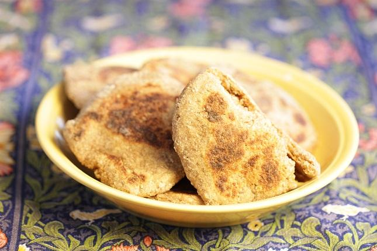

Flatbread
The Vikings crafted a diet rooted in simplicity and nutritional value. To complement their protein-rich diet, Vikings turned to grains. Grains provided a reliable source of energy for their active lifestyles. They could also be kept for months, and were easily transported. They were used to make bread, porridge, and beer. Barely, a hardy versatile grain, was a common presence, forming the basis of porridges and bread.
Flatbreads were among the different breads baked with grains. These small breads were made of flour, eggs and water. Honey made the bread tastier. They were baked in a pan or grilled over the fire. It was not until the end of the Viking period that ovens were widely used in the household. Serve warm. The bread should be eaten immediately, but may be frozen and then reheated. They are good with all Viking foods and just as delicious on their own. You can top them with whatever you’d like – cheese, cured meats, or even honey, butter or Skyr.